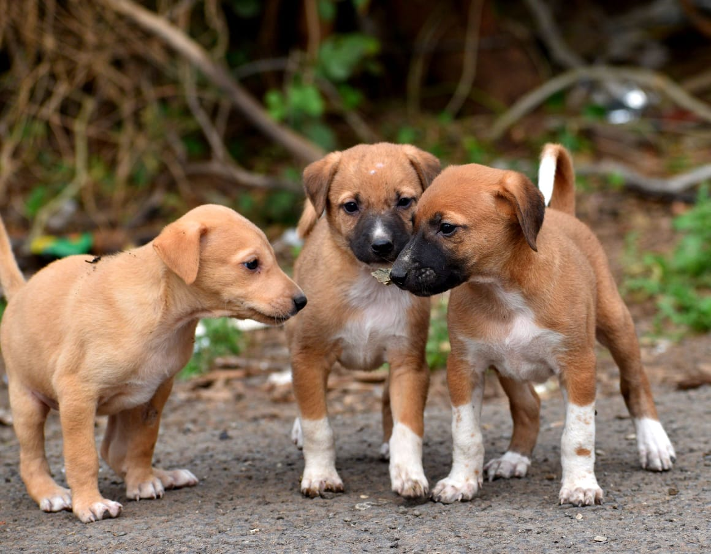
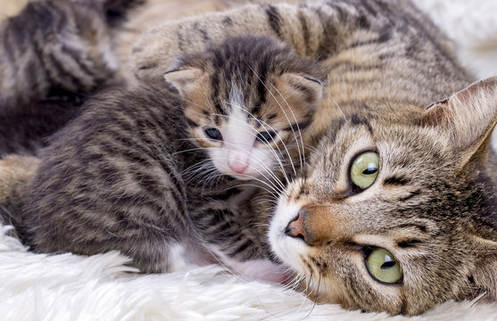
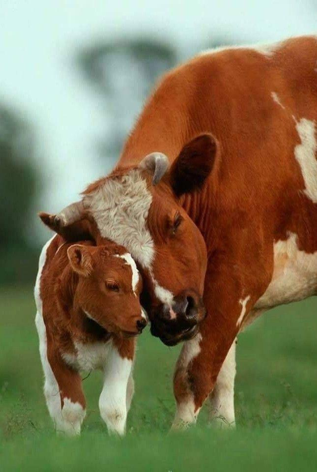
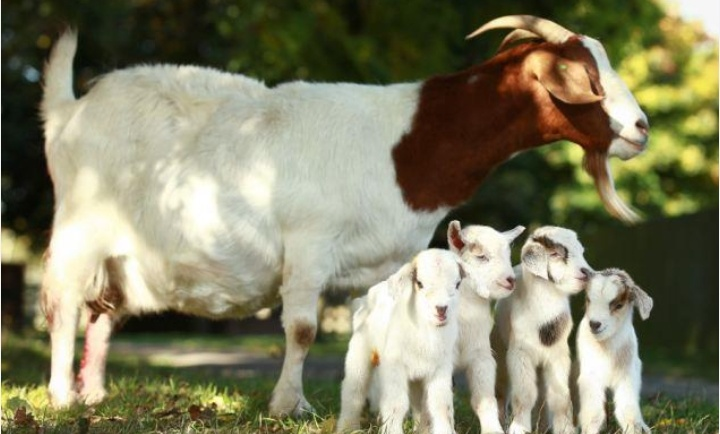
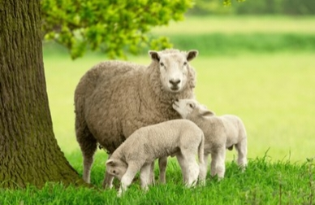
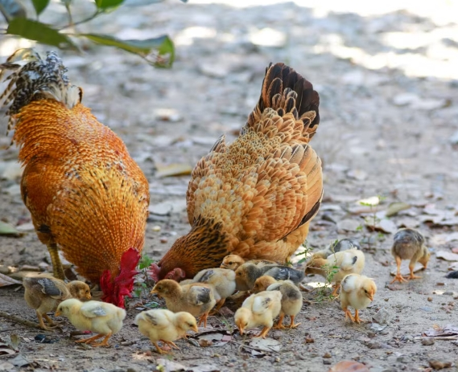
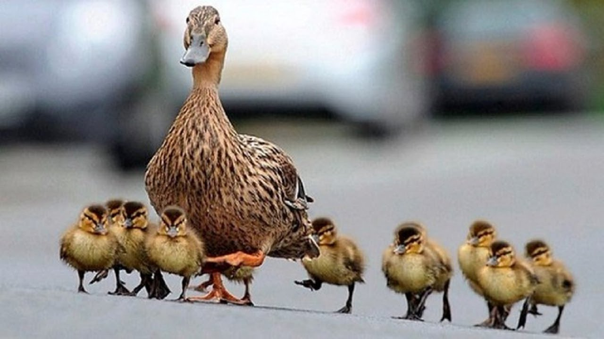
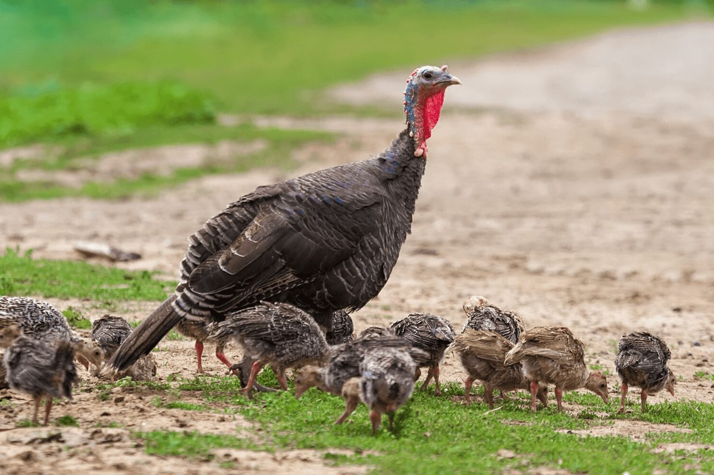

Learn about animals that live with humans and help in daily life
Explore Animals"Buy Animals and Farm Products"
HEALTHY DOMESTIC ANIMALS | FRESH DAIRY PRODUCTS | FARM-FRESH EGGS |
ORGANIC MANURE | POULTRY PRODUCTS | BREEDING ANIMALS
place order via whatsappDomestic animals are tamed and raised by humans for food, work, protection, and companionship. They play an important role in our lives.








Call: 0496-9876-6578
Email: info@animals.com